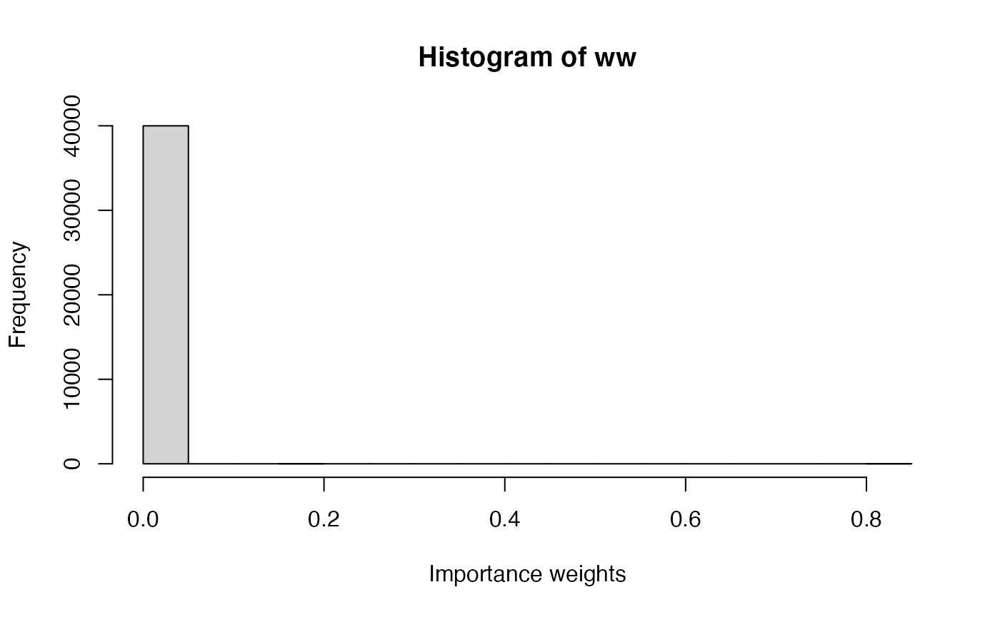

p6.RmdIn the previous practical, you implemented the Importance sampling (IS) and Metropolis-Hastings (M-H) algorithms using examples on binomial and Poisson data. In this practical, an example on Normal data will be used to estimate the mean and precision of the Normal distribution. Please refer to the previous practical if you need to refresh yuor memory on the details of the IS and M-H algorithms.
In this example the heights data set will be considered. The heights of the participants of VIBASS have been collected and the aim is to make inference about the average. In this case, the data follow a Normal distribution with mean \(\mu\) and \(\sigma^2\). The prior on \(\mu\) is a Normal with known mean and precision and the prior on \(\tau\) is a gamma distribution with known parameters.
This model can be stated as:
\[ \begin{array}{rcl} y_i & \sim & N(\mu, \tau)\\ \mu & \sim & N(\mu_{\mu}, \tau_{\mu})\\ \tau & \sim & Ga(a, b) \end{array} \]
Note that now the Normal distribution is expressed using precision rather than variance.
The parameters for the priors are as follows. For the prior on \(\mu\), we will use a Gaussian distribution with mean \(\mu_{\mu} = 0\) and precision \(\tau_{\mu} = 0.001\). For the prior on \(\tau\), a Gamma with parameters \(0.01\) and \(0.01\) will be used, as this provides a vague prior due to a small precision (and hence a large variance).
data <- data.frame(height =
c(1.73, 1.65, 1.65, 1.76, 1.65, 1.63, 1.70, 1.58, 1.57, 1.65, 1.74, 1.68, 1.67, 1.58, 1.66, 1.92, 1.82, 1.69, 1.75, 1.72, 1.71, 1.73, 1.69, 1.70, 1.78, 1.88, 1.82, 1.86, 1.65))
y <- data$heightNote that these heights correspond to those available in previous practicals, with the first 15 values corresponding to female VIBASS participants and the following 14 to male VIBASS participants.
In this example we have to make inference on two parameters, i.e. \(\theta = (\mu, \tau)\). Hence, the sampling distribution will be a bivariate distribution. In fact, we will be sampling \(\mu\) and \(\tau\) independently of each other. Values of \(\mu\) will be sampled using a log-Normal distribution centered at 0 and with standard deviation 0.5, and values of \(\tau\) will be proposed using a log-Normal distribution with mean 0 and standard deviation 1.25.
# We increase the number of simulations in this example
n_simulations <- 40000
set.seed(12)
theta_sim <- cbind(rlnorm(n_simulations, 0, 0.5),
rlnorm(n_simulations, 0, 1.25)
)Next, importance weights are computed. Note that now the density of the bivariate sampling distribution is the product of the two univariate sampling distributions (or the sum on the log scale).
# Log-Likelihood (for each value of theta_sim)
# NOTE: 'apply' is used now as 'theta_sim' is a matrix
loglik_biv <- apply(theta_sim, 1, function(THETA) {
sum(dnorm(data$height, THETA[1], sqrt(1 / THETA[2]), log = TRUE))
})
# Log-weights: log-lik + log-prior - log-sampling_distr
log_ww <- loglik_biv + dnorm(theta_sim[, 1], 0, sqrt(1 / 1000)) +
dgamma(theta_sim[, 2], 0.01, 0.01)
log_ww <- log_ww - dlnorm(theta_sim[, 1], 0, 0.5) - dlnorm(theta_sim[, 2], 0, 1.25)
# Re-scale weights to sum to one
log_ww <- log_ww - max(log_ww)
ww <- exp(log_ww)
ww <- ww / sum(ww)Importance weights can be summarized using a histogram (see below). The distribution of weights shows that most samples are far from the regions of high posterior density.
hist(ww, xlab = "Importance weights")
The posterior mean and variance can be computed as follows:
# Posterior mean (mu)
post_mean_mu <- sum(theta_sim[, 1] * ww)
post_mean_mu
#> [1] 1.69772
# Posterior variance (mu)
post_var_mu <- sum(theta_sim[, 1]^2 * ww)- post_mean_mu^2
post_var_mu
#> [1] 0.000118331
# Posterior mean (tau)
post_mean_tau <- sum(theta_sim[, 2] * ww)
post_mean_tau
#> [1] 56.4975
# Posterior variance (tau)
post_var_tau <- sum(theta_sim[, 2]^2 * ww)- post_mean_tau^2
post_var_tau
#> [1] 24.91431Finally, an estimate of the posterior density of each parameter can be obtained by using weighted kernel density estimation:
par(mfrow = c(1, 2))
plot(density(theta_sim[, 1], weights = ww, bw = 0.2), main = "Posterior density (mu)",
xlim = c(0, 3))
plot(density(theta_sim[, 2], weights = ww, bw = 7.5), main = "Posterior density (tau)",
xlim = c(0, 200))Note that the value of the bandwidth used (argument bw) has been set manually so that both curves will match (as the default bandwidth provided a slightly different estimate of the posterior distribution) to enable a fair comparison.
As above, we have to make inference on two parameters. Hence, the proposal distribution will be a bivariate distribution, i.e., the distribution is defined on vector \(\theta = (\mu,\tau)\).
In fact, we will be sampling \(\mu\) and \(\tau\) independently from each other, but the two values will be accepted jointly. A new value of \(\mu\) will be proposed using a Normal distribution centered at the current value of \(\mu\) with precision \(10\), and a new value of \(\tau\) will be proposed using a log-Normal distribution with mean the logarithm of the current value and precision \(10\).
All these functions are defined here:
#Proposal distribution: sampling
rq <- function(theta) {
res <- c(NA, NA)
res[1] <- rnorm(1, theta[1], sd = sqrt(1 / 10)) #Sample mu
res[2] <- rlnorm(1, meanlog = log(theta[2]), sdlog = sqrt(1 / 10)) #Sample tau
return(res)
}
#Proposal distribution: log-density
logdq <- function(new.theta, theta) {
res <- dnorm(new.theta[1], theta[1], sd = sqrt(1 / 10), log = TRUE) #Mu
res <- res +
dlnorm(new.theta[2], meanlog = log(theta[2]), sdlog = sqrt(1 / 10), log = TRUE) #Tau
}
#Prior distribution
logprior <- function(theta) {
res <- dnorm(theta[1], 0, sd = sqrt(1 / 0.001), log = TRUE) #Mu
res <- res + dgamma(theta[2], 0.01, 0.01, log = TRUE) #Tau
return(res)
}
#LogLikelihood
loglik <- function(y, theta) {
res <- sum(dnorm(y, mean = theta[1], sd = sqrt(1 / theta[2]), log = TRUE))
}
#Number of iterations
n.iter <- 40500
#Simulations of the parameter
theta <- as.list(rep(NA, n.iter))
#Initial value
theta[[1]] <- c(1.5, 1)
for(i in 2:n.iter) {
new.theta <- rq(theta[[i - 1]])
#Log-Acceptance probability
logacc.prob <- loglik(y, new.theta) + logprior(new.theta) + logdq(theta[[i - 1]], new.theta)
logacc.prob <- logacc.prob - loglik(y, theta[[i - 1]]) - logprior(theta[[i - 1]]) -
logdq(new.theta, theta[[i - 1]])
logacc.prob <- min(0, logacc.prob)#0 = log(1)
if(log(runif(1)) < logacc.prob) {
#Accept
theta[[i]] <- new.theta
} else {
#Reject
theta[[i]] <- theta[[i - 1]]
}
}The same burn-in, thinning and summary statistics and plots are computed:
#Remove burn-in
theta <- theta[-c(1:500)]
#Thinning
theta <- theta[seq(1, length(theta), by = 10)]
#Use matrix format
theta <- do.call(rbind, theta)
#Summary statistics
apply(theta, 2, summary)
#> [,1] [,2]
#> Min. 1.638520 30.92743
#> 1st Qu. 1.699439 95.00554
#> Median 1.711260 115.63784
#> Mean 1.711036 118.64952
#> 3rd Qu. 1.721982 141.06004
#> Max. 1.777419 238.84464
par(mfrow = c(2, 2))
#Mean
plot(theta[, 1], type = "l", main = "MCMC samples",
ylab = expression(mu))
plot(density(theta[, 1]), main = "Posterior density",
xlab = expression(mu))
#Precision
plot(theta[, 2], type = "l", main = "MCMC samples", ylab = expression(tau))
plot(density(theta[, 2]), main = "Posterior density",
xlab = expression(tau))Finally, if you prefer to show the posterior distribution of the variance (instead of that of the precision), then you can simply transform the sampled values of the precision as follows:
The previous example can be regarded as a simple linear regression example in which the mean \(\mu_i\) (of participant \(i\)) is equal to an intercept term \(\alpha\), i.e., \(\mu_i = \alpha\). If a covariate \(x_i\) is available, the model could be extended to consider a mean equal to \(\mu_i = \alpha + \beta x_i\).
We can consider the gender of the VIBASS participants as a covariate and add this information to the data set:
In the new gender variable, 1 means that the participant is a woman and 0 means that the participant is a man. The resulting model is now:
\[ \begin{array}{rcl} y_i & \sim & N(\mu_i, \tau)\\ \mu_i & = & \alpha + \beta x_i\\ \alpha & \sim & N(0, 0.001)\\ \beta & \sim & N(0, 0.001)\\ \tau & \sim & Ga(0.01, 0.01) \end{array} \]
Note that that the mean \(\mu_i\) is different for different participants as gender is involved, whose value is represented by covariate \(x_i\). Also, the priors of the model parameters have been fully defined (i.e., the distribution parameters are set), but other priors could be used.
In the following exercises you will be using IS and M-H to fit this linear regression model with a single covariate.
This model can be fitted using IS by sampling values for \(\theta =(\alpha, \beta, \tau)\). Values for these three model parameters can be sampled independently. For \(\alpha\) a Normal distribution with mean 1.71 (the average height) and standard deviation \(10\) (to have large variability) can be used to sample values, and values of \(\beta\) can be sampled from a Normal with zero mean and standard deviation \(10\). Values for \(\tau\) can be obtained using a log-Normal with mean \(0\) and standard deviation \(1.25\).
Implement the IS algorithm to fit this model.
Compute estimates of the posterior mean and variance of the three model parameters.
Compute the effective sample size for each parameter. What do you observe? Do you think that inference is equally reliable for all three parameters?
Similarly, this model can be fitted using the M-H algorithm. In this case, the proposal distribution needs to provide values of \(\theta =(\alpha, \beta, \tau)\). This can be done independently for each variable as in the example developed above. For each of \(\alpha\) and \(\beta\), the proposal distribution can be a Normal distribution with mean the current value and precision 10, while for \(\tau\) exactly the same proposal as before can be used.
Implement the M-H algorithm to fit this model. You can make use of the code above.
Compute summary statistics of the model parameters and compare them with the ones obtained with IS.